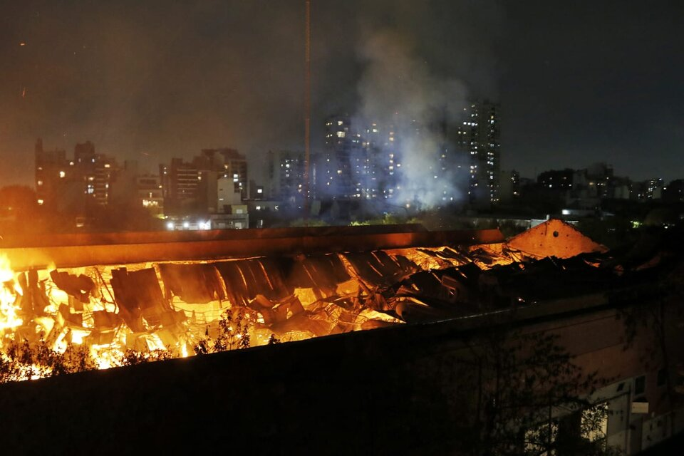

Trabajan varias dotaciones de Bomberos de la Ciudad y hay peligro de derrumbe. No se registraron heridos hasta el momento. El 5 de febrero de 2014 murieron allí ocho bomberos y dos integrantes de Defensa Civil.

Bomberos de la Ciudad de Buenos Aires combaten este lunes un incendio en el contrafrente del depósito de Iron
Mountain, en la calle Gaspar Jovellanos al 1300 de Barracas, el mismo lugar donde en 2014 se registró una tragedia
que dejó un saldo de 10 muertos -ocho bomberos y dos miembros de Defensa Civil-. Hay peligro de derrumbe y al
momento no se registraron heridos.
"Una dotación se encuentra combatiendo el incendio desde la intersección de Benito Quinquela Martín y Azara y otra
desde la intersección de Gaspar Melchor Jovellanos y Benito Quinquela Martín", aseguraron fuentes que trabajan en
el lugar a Télam.
Asimismo, indicaron que "se retiró a todo el personal del interior del depósito ante el peligro de derrumbe", ya
que "se visualiza mediante los drones emplazados que el fuego incursionó por todo el techo en forma irregular". Y
agregaron que la parte frontal y media del techo del depósito "cedió parcialmente".
La tragedia de 2014
La tragedia de 2014 ocurrió en la mañana del 5 de febrero de ese año, cuando la propagación de un incendio en el
depósito que la empresa tenía en Azara 1245 (en la misma manzana) provocó que la estructura metálica (columnas y
cabriadas) que sostenía el techo comenzara a ceder por las altas temperaturas y derrumbara la pared de la calle
Jovellanos.
Como consecuencia hubo un saldo de 10 muertos: la primera mujer bombero de la Policía Federal, Anahí Garnica, y
sus compañeros Damián Véliz, Eduardo Conesa, Juan Monticelli y Maximiliano Martínez, todos del Cuartel I de
Bomberos; José Luis Méndez, del cuartel de Villa Domínico; Leonado Day, jefe de Departamento Zona I de la
Superintendencia Federal Bomberos; Pedro Baricola, de Defensa Civil de la Ciudad, y los bomberos voluntarios de
Vuleta de Rocha, Sebastián Campos y Facundo Ambrosi.
Hay un total de 18 personas imputadas entre los que figuran directivos de la empresa, exfuncionarios de la
Dirección General de Fiscalización y Control del gobierno porteño, como así también un empleado de seguridad de
Iron Mountain que estaba en funciones cuando se inició el incendio.
Se trata de los funcionarios porteños Vanesa Berkowski, quien además ya había sido procesada por el derrumbe del
boliche Beara, Rafael Roldán, Pedro Chapar, Luis Cogo, Roberto Chiesa, Silvia Hers, Gastón Laugle, Esther Moroni,
Alberto Graciani, Ricardo Grunfeld, Félix Lugo, Jorge Papanicolau y Norberto Ventura Sosa, cuyo sobreseimiento
había sido revocado.
Los directivos de Iron Mountain, Christian Castiñeiras, Héctor García, Guillermo Lockhart y Eduardo Sueyras Parra;
y el vigilador Oscar Godoy.
Enviaron a juicio a los imputados
El nuevo incendio se da luego de que el 12 de abril pasado y a nueve años de la tragedia, la jueza Fabiana
Palmaghini elevara a juicio oral y público la causa. La decisión llegó tras un fallo en diciembre pasado de la
Sala VI de la Cámara Nacional de Apelaciones en lo Criminal que confirmó los procesamientos de todos los
imputados.
La investigación judicial hasta el momento sostiene que hubo falencias gubernamentales en el control del
funcionamiento del depósito de la empresa, aunque no se pudo determinar si el inicio del incendio fue intencional
o un accidente.
Entre las pruebas está el informe de los peritos de la División Siniestros de la Policía Federal Argentina y del
Instituto Nacional de Tecnología Industrial (INTI), que casi un año después del incendio, concluyeron que "el
incendio podría haber sido intencional".
Hasta el momento, Iron Mountain —compañía de capitales estadounidenses dedicada a la administración de
documentación empresarial— llevaba siete incendios en sus depósitos a nivel mundial, que en cinco ocasiones fueron
declarados intencionales. Pero sólo en Argentina hubo víctimas mortales.